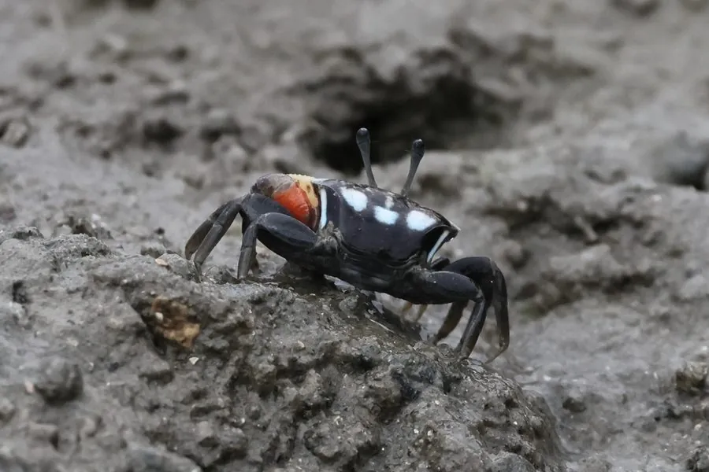

甲壳动物 · 动物界
屠氏管招潮蟹 Tubuca dussumieri

生活在热带河口泥滩的招潮蟹，雄蟹有一只巨大的螯足，求偶时挥动螯足打信号，退潮时在泥滩上取食有机碎屑。
- 分类
- 门节肢动物门纲软甲纲目十足目科沙蟹科属管招潮蟹属
- 栖息环境
- 红树林和河口泥滩，栖息在自己挖掘的洞穴中
- 地理分布
- 中国南方、东南亚和南亚的红树林与河口
- 保护级别
- IUCN 暂无评估；中国未列入国家重点保护名录
物种志
屠氏管招潮蟹头胸甲宽 2–3 cm，体色深褐或灰褐，雄蟹左右螯足大小悬殊，大螯鲜黄或橙色，长度可达体宽的两倍；雌蟹两螯均小。眼柄细长，可以高高竖起观察四周。
它分布于中国南方、东南亚和南亚的红树林和河口泥滩，栖息在自己挖掘的洞穴中，退潮时出来取食泥沙中的有机碎屑和藻类。雄蟹求偶时会在洞口挥舞大螯，发出视觉信号，也会用螯足敲击地面。招潮蟹的洞穴能改善泥滩通气，是红树林生态系统中重要的工程物种。它遇到危险时迅速躲进洞里，洞口常可见小泥球；大螯主要用于求偶和争斗，取食时反而不太方便，幼体在海水中浮游发育。目前 IUCN 暂无评估；中国未列入国家重点保护名录。
形态与习性
- 食性取食泥沙中的有机碎屑和藻类
- 体型头胸甲宽 2–3 cm
- 识别雄蟹一只大螯鲜黄或橙色
- 习性退潮时在泥滩活动，遇险钻洞
- 求偶雄蟹挥动大螯发出视觉信号
- 生态作用挖洞改善泥滩通气
趣味知识
- 雄招潮蟹有一只特别大的螯，几乎和身体一样长。
- 求偶时它会站在洞口挥舞大螯，像在打旗语。
- 大螯主要用于求偶和打斗，吃饭时反倒不太方便。